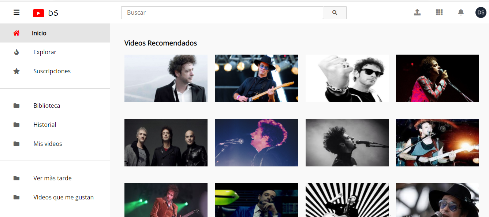

Portfolio

Page YouTube
Este es un modelo de diseño de la página de YouTube, en donde se refleja como se ve la página original. Esta simulación se encuentra dividida en: iconos,carpetas,inicio de sesión y hasta videos recomendados en donde aparece Gustavo Cerati.
El repositorio se encuentra en GitHub.